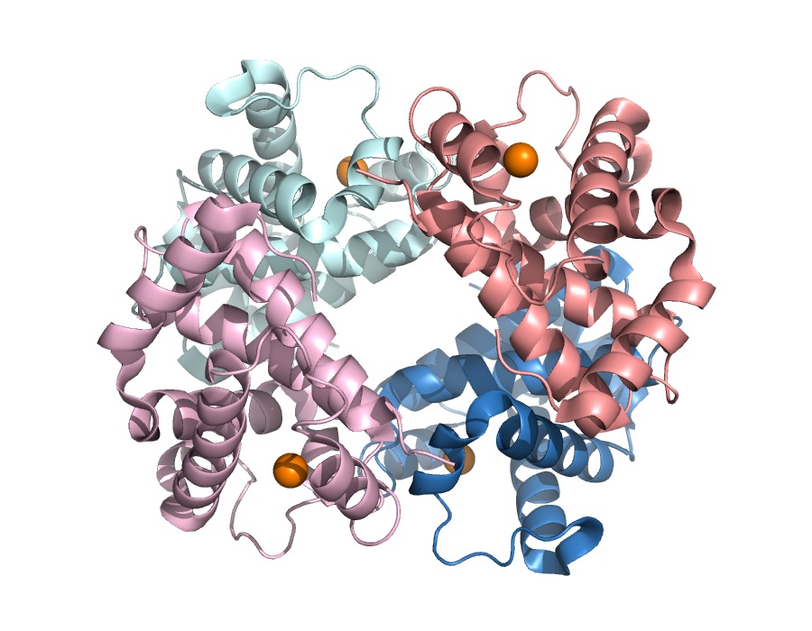
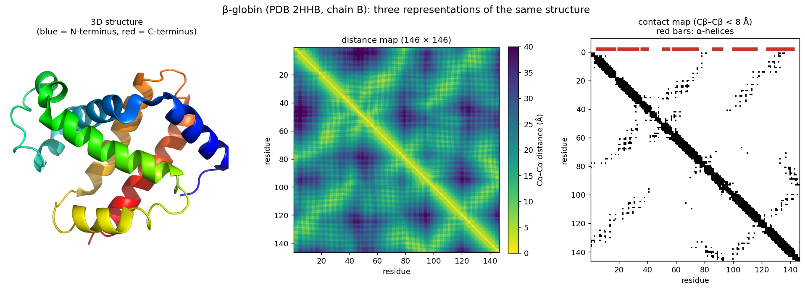
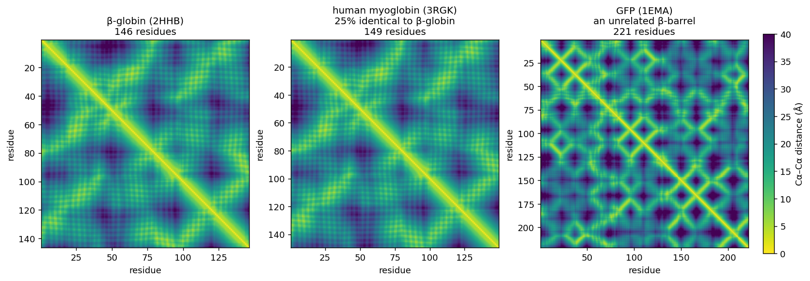

6 Session 6: Protein Structure
Sources for this page: Petras Kundrotas’s KB8029 lecture “Protein Structure” (Feb 2026) — this page follows its structure for the levels- of-structure and structure-prediction material, adapted and substantially shortened, not copied verbatim; Wikipedia, Protein structure, Alpha helix, Beta sheet, Anfinsen’s dogma, Homology modeling, Threading (protein sequence), Root-mean-square deviation of atomic positions, Template modeling score, CASP — CC BY-SA 4.0; RCSB PDB-101 — CC BY 4.0; Baldwin & Chothia (1979), “Haemoglobin: the structural changes related to ligand binding and its allosteric mechanism,” Journal of Molecular Biology 129:175-220 (PubMed). Structural-classification and structural-alignment sources: Murzin, Brenner, Hubbard & Chothia (1995), “SCOP: a structural classification of proteins database for the investigation of sequences and structures,” J. Mol. Biol. 247:536-540 (PubMed); Orengo, Michie, Jones, Jones, Swindells & Thornton (1997), “CATH — a hierarchic classification of protein domain structures,” Structure 5:1093-1108 (PubMed); Cheng, Schaeffer, Liao et al. (2014), “ECOD: an evolutionary classification of protein domains,” PLoS Computational Biology 10:e1003926 (PubMed); Lau, Bordin, Kandathil et al. (2024), “Exploring structural diversity across the protein universe with The Encyclopedia of Domains,” Science 386:eadq4946 (PubMed); Holm & Sander (1993), “Protein structure comparison by alignment of distance matrices” (DALI), J. Mol. Biol. 233:123-138 (PubMed); Zhang & Skolnick (2005), “TM-align: a protein structure alignment algorithm based on the TM-score,” Nucleic Acids Research 33:2302-2309 (PubMed); van Kempen, Kim, Tumescheit, Mirdita, Lee, Gilchrist, Söding & Steinegger (2024), “Fast and accurate protein structure search with Foldseek,” Nature Biotechnology 42:243-246 (PubMed) — CC BY 4.0 (Foldseek paper). The two real crystal structures used below and in the notebook, PDB entries 2HHB (deoxy hemoglobin) and 1HHO (oxy hemoglobin), were fetched live from the PDB archive — structure coordinate data is CC0 1.0 (public domain), as is a third real structure used below, 1EMA (green fluorescent protein), as are 3RGK (human myoglobin, a K45R variant), 1OJ6 (human neuroglobin) and 1IDR (M. tuberculosis truncated hemoglobin N). All secondary-structure counts, distances, distance maps, alignments, TM-scores and rendered figures below were computed fresh for this page and its notebook using Biopython, a locally-run PyMOL (open-source), TM-align (through tmtools), and a locally-run Foldseek (open-source), not taken from the lecture’s own numbers or images; CATH and Pfam classifications were fetched live from the PDBe and InterPro APIs.
Notebook: Session 6 — Protein Structure in code — the code behind this page. Download it to run it yourself.
6.1 Learning goals
By the end of this session you should be able to:
- describe the four levels of protein structure, using haemoglobin, and name the computational task that belongs to each;
- represent a structure as coordinates, as a distance map and as a contact map, and explain what each makes easy to see;
- explain the difference between a sequence alignment and a structure alignment, and why structure is often more conserved than sequence;
- interpret RMSD and TM-score, and explain at a conceptual level how DALI and Foldseek compare structures;
- explain why a single PDB entry is not necessarily “the” structure of a protein;
- state secondary-structure prediction as a supervised learning problem: what goes in, what comes out.
The question for this session is: what information about a protein is contained in its sequence, what becomes visible only in 3D, and how can computers connect the two? Sessions 3–5 worked with sequences, retrieving them, aligning them and searching for families. In Session 3 you also found structures, but only as database records (a PDB entry, an AlphaFold model). In this session the structure itself becomes the data. Its coordinates can be turned into distances, secondary structure, domains and interfaces, and compared with other structures. The course’s globin thread continues as well. In Session 3 you looked up HBB’s identifiers, in Session 4 you aligned globin sequences and in Session 5 you searched for the globin family, and now you compare globin structures.
6.2 Sequence becomes structure
6.2.1 Four levels, four computational tasks
A protein starts as a polypeptide chain, a linear polymer of amino acids, which folds into a 3D shape. Structural biology describes the result at four levels, and in this course each level comes with its own computational problem:
| Level | What it is | Computational task | Where in the course |
|---|---|---|---|
| Primary | the amino-acid sequence | alignment, BLAST, profiles | Sessions 3–5 |
| Secondary | local backbone shapes: α-helix, β-strand, coil | prediction from sequence | Sessions 7–11 |
| Tertiary | the 3D fold of one chain | structure comparison, prediction | this session; Session 12 |
| Quaternary | several chains packed together | interfaces, complexes | this session; Session 12 |
- An α-helix is a coil held together by hydrogen bonds between the backbone N-H and C=O groups of residues four apart. A β-sheet is built from extended β-strands that are hydrogen-bonded edge to edge. Everything else is called coil. Programs such as DSSP assign these labels from the coordinates of a solved structure.
- The tertiary fold is held together mainly by the hydrophobic effect (non-polar side chains bury themselves away from water), together with hydrogen bonds, electrostatic interactions and van der Waals contacts. Two of these are worth naming. A salt bridge is an electrostatic interaction between oppositely charged side chains: a lysine or arginine against an aspartate or glutamate. A disulfide bond is a covalent link between two cysteine sulphur atoms, far stronger than the rest, and the only one of these interactions that is a real bond rather than an attraction.
- Many proteins work as a single chain, while others assemble into complexes of two to hundreds of chains.
6.2.2 What the backbone can and cannot do
The chain is often called flexible, which is true but narrower than it sounds. Each residue contributes three dihedral angles to the backbone: φ about the N–Cα bond, ψ about Cα–C, and ω about the peptide bond that joins one residue to the next. Only the first two turn freely. The peptide bond has partial double-bond character, so ω is held near 180° — the trans form — and only about 0.3% of residues are found in the cis form, most of them before a proline.
A conformation of the backbone is therefore two numbers per residue, not three, and that is why the Ramachandran plot — φ against ψ — can show the conformation of a whole chain on one pair of axes. Residues in an α-helix fall in one tight cluster, because a helix is the same pair of angles repeated; residues in a β-strand fall in another; coil residues scatter between them. The clusters are not drawn on the plot. They are where the residues land.
6.2.3 Haemoglobin: all four levels in one protein
Haemoglobin is a heterotetramer of two α-globin chains (141 residues) and two β-globin chains (146 residues; β-globin is HBB, this course’s running example since Session 3). Each chain folds on its own and carries an oxygen-binding haem group. Using PyMOL’s secondary-structure algorithm (dss), the notebook computes that one β chain is 118 of 146 residues (80.8%) α-helix and 0% β-strand. The PDB entry’s own annotation, which Session 7 uses, gives 117 helical residues, because the two methods differ slightly in where exactly a helix ends.

2HHB, human deoxyhaemoglobin: two α chains (blue/cyan), two β chains (salmon/pink), four haem iron atoms (orange spheres). Rendered from the real structure with PyMOL.
6.2.4 Does the sequence determine the structure?
Whether a computer can predict a structure at all depends on how much of it the sequence determines. In the 1960s Christian Anfinsen showed that ribonuclease, unfolded in the test tube, refolds into its active shape on its own once the denaturant is removed. For many small globular proteins, then, the sequence contains enough information to specify the native fold under the right conditions, and this principle is what makes structure prediction possible. It is not a law for every protein, however. Some proteins need chaperones to fold efficiently, many need a ligand, cofactor or binding partner, some switch between alternative states (haemoglobin itself, below), and intrinsically disordered regions have no single fold.
Two kinds of interaction build a fold. Local interactions, between residues close in sequence, form secondary structure. The hydrogen bonds of an α-helix, for example, connect residues \(i\) and \(i+4\). Long-range interactions, between residues far apart in sequence but close in space, pack the helices and strands into a tertiary structure. Local structure can therefore be partly guessed from a short window of sequence (Session 7), whereas long-range structure cannot, which is why tertiary-structure prediction is so much harder.
6.2.5 A structure as a matrix: distance and contact maps
A structure file is a list of atomic coordinates, but coordinates are not always the most useful representation. An alternative is the distance between every pair of residues, which for a chain of \(L\) residues gives an \(L \times L\) distance map. Thresholding the distance map gives a contact map, with 1 where two residues are close (here, Cβ atoms within 8 Å) and 0 elsewhere. Unlike coordinates, both maps stay the same however the protein is rotated or moved, so two structures can be compared without first superimposing them.

This representation returns twice later in the course. First, an \(L \times L\) map looks like an image, which is why image-processing networks (CNNs, Session 10) turned out to be good at predicting contacts. Second, coevolution, contact prediction and AlphaFold’s “pair representation” (Session 12) all work on residue-pair information like this.
6.2.6 Looking at structures: PyMOL
To look at a structure yourself, you need a molecular viewer. PyMOL is, with ChimeraX, one of the two most widely used, and its open-source version is free. It loads a structure directly from the PDB and shows it as cartoon (secondary structure as ribbons and arrows, as in the figures above), as sticks (every bond, useful for a side chain or ligand) or as spheres (every atom, useful for packing). It also measures distances and angles directly from the coordinates. This session’s lab uses PyMOL hands-on, but you do not need to install the program: open-source PyMOL is also a Python library, which the lab notebook installs on Colab. You type the same commands as in PyMOL’s own command line, and the notebook draws the picture. The course notebook drives PyMOL the same way, so that its figures and measurements are reproducible.
6.2.7 Further reading
- Wikipedia, Protein structure and Anfinsen’s dogma
- RCSB PDB-101 — short, illustrated explainers on structure and specific proteins, aimed at newcomers
6.3 Comparing proteins in 3D
6.3.1 Read the evidence behind the coordinates
An experimental structure and a predicted model both give us coordinates. For an X-ray crystal structure, resolution describes the level of detail in the diffraction data used to build the model. It is reported in ångströms (Å). Smaller values indicate finer detail in the data. PDB-101 guide to crystallographic resolution
An AlphaFold model reports pLDDT on a scale from 0 to 100 for each residue. A higher value means the model is more confident in the local shape around that residue. To see how closely a prediction matches an experimental structure, compare their coordinates using the methods below. Session 12 returns to AlphaFold confidence scores in more detail. EMBL-EBI guide to pLDDT
6.3.2 Sequence alignment versus structure alignment
Session 4 defined an alignment as a hypothesis about which residues correspond. A sequence alignment decides this from the sequences alone, using substitution scores. A structure alignment decides it from the 3D coordinates, by asking which residues occupy the same position in the two folds. The notebook compares β-globin both ways with five proteins, ranging from a close paralog to an unrelated fold:
| Compared with β-globin | Sequence identity* | Sequence-only score (shuffled max) | Residue pairs agreeing | TM-score |
|---|---|---|---|---|
| α-globin (human, 2HHB) | 43% | 288 (43) | 95% | 0.88 |
| myoglobin (human, 3RGK) | 25% | 111 (46) | 97% | 0.91 |
| neuroglobin (human, 1OJ6) | 22% | 89 (41) | 66% | 0.82 |
| truncated haemoglobin N (M. tuberculosis, 1IDR) | 16% | 28 (49) | 0% | 0.57 |
| GFP (jellyfish, 1EMA) | 6% | 25 (50) | — | 0.33 |
*Identity over the structurally aligned residues. “Sequence-only score” is the best Smith–Waterman alignment with BLOSUM62, and the number in brackets is the highest score among 200 alignments against shuffled versions of the same sequence. “Residue pairs agreeing” is the fraction of structurally aligned pairs that the sequence alignment also pairs up. TM-scores are normalised by the length of β-globin.
The table is best read from top to bottom. For α-globin and myoglobin, the sequence alignment has a strong signal and pairs up almost exactly the same residues as the structure alignment. (Session 5 showed that BLAST, with default settings, nevertheless missed myoglobin, because a heuristic search can skip an alignment that an exhaustive one finds.) For neuroglobin the sequence signal is still clear, but a third of the pairs are wrong, because the gaps are in the wrong places. For the bacterial truncated haemoglobin, the sequence alignment does no better than shuffled sequences and pairs up none of the right residues. The structure alignment nevertheless finds a shared globin fold over more than 100 residues. This is the central lesson: structure is more conserved than sequence. When the sequence evidence fades, structure can still reveal a relationship.
6.3.3 Measuring structural similarity: RMSD and TM-score
To compare structures, we need a number for how similar they are. RMSD (root-mean-square deviation) is the most direct measure. It is the root-mean-square distance between corresponding atoms after the two structures have been optimally superimposed. RMSD is simple, but it grows with protein length, and one badly placed loop can inflate it even when the rest of the fold matches. RMSD also depends on which atoms are compared. A superposition can be restricted to the residues that fit well, and a very low RMSD over a short fragment says nothing about the rest of the proteins. An RMSD should therefore always be given together with the number of aligned residues, for example “1.5 Å over 140 residues”. The TM-score avoids these problems. It weights each residue pair by how close it is, so that small deviations count fully and large ones hardly at all, and it normalises by protein length. It runs from 0 to 1 (identical). Unrelated proteins typically score around 0.2–0.3, and scores above about 0.5 usually mean the same overall fold. This is a rule of thumb, not a law. The truncated haemoglobin above (0.57) and GFP (0.33) are clear cases, but scores in between need other evidence.
Both measures share a dependency worth making explicit. Before either can be calculated, one structure has to be moved onto the other: a rigid-body transformation, which translates the centre of mass and rotates about it without changing anything inside the structure. The rotation is usually reported as a 3×3 matrix, and can equivalently be written as three Euler angles. Alignment programs print both the matrix and the translation vector, and the superposition they choose is the one that minimises RMSD — so an RMSD is always the best RMSD, never an arbitrary one.
6.3.4 The arithmetic underneath
It is worth seeing what “optimally superimposed” actually means, because it is one of the few places in this course where the optimum has a closed-form answer rather than a heuristic.
Moving one structure onto another without deforming it means applying a rotation \(R\) and a translation \(\mathbf{t}\) to every atom:
\[ \mathbf{y}_i = R\,\mathbf{x}_i + \mathbf{t} \]
\(R\) is a 3×3 rotation matrix: orthogonal (\(R^{\mathsf{T}}R = I\)) with \(\det R = +1\). Orthogonality is what keeps every internal distance unchanged, which is exactly what “rigid” means; the determinant being \(+1\) rather than \(-1\) rules out reflections, so a left-handed helix cannot be superimposed on a right-handed one by flipping it. Nine numbers with those constraints leave three degrees of freedom, which is why the same rotation can be written as three Euler angles instead.
Given a correspondence — which residue of one structure pairs with which of the other — the RMSD over \(n\) pairs is
\[ \mathrm{RMSD} = \sqrt{\frac{1}{n}\sum_{i=1}^{n} \lVert R\,\mathbf{x}_i + \mathbf{t} - \mathbf{y}_i \rVert^2} \]
and the superposition problem is to minimise it over \(R\) and \(\mathbf{t}\). It separates into two parts. The translation is immediate: the optimum always puts the two centroids on top of each other, so subtract each structure’s own centroid and the translation is dealt with. What is left is the rotation, and that is solved exactly by the Kabsch algorithm: form the 3×3 covariance matrix of the centred coordinates,
\[ H = \sum_{i=1}^{n} \mathbf{x}_i \mathbf{y}_i^{\mathsf{T}} \]
take its singular value decomposition \(H = U\Sigma V^{\mathsf{T}}\), and the best rotation is
\[ R = V \begin{pmatrix} 1 & 0 & 0 \\ 0 & 1 & 0 \\ 0 & 0 & d \end{pmatrix} U^{\mathsf{T}}, \qquad d = \operatorname{sign}\!\left(\det(V U^{\mathsf{T}})\right) \]
The \(d\) is there to prevent exactly the reflection that the determinant condition forbids: without it the algebra will happily return the mirror image when that fits better.
The TM-score replaces the plain average with a weighted one, which is what stops a single bad loop dominating:
\[ \mathrm{TM} = \frac{1}{L}\sum_{i=1}^{n} \frac{1}{1 + (d_i/d_0)^2}, \qquad d_0 = 1.24\sqrt[3]{L - 15} - 1.8 \]
Here \(d_i\) is the distance between the \(i\)th pair after superposition and \(L\) is the length of the reference protein. A pair much closer than \(d_0\) contributes nearly 1 and a pair much further contributes nearly 0, so the score counts how much of the protein is in roughly the right place rather than averaging the errors. Dividing by \(L\) rather than by \(n\) is what stops a short, well-fitting fragment scoring highly. For β-globin’s 146 residues \(d_0\) is about 4.5 Å.
What the arithmetic does not solve. All of the above assumes the correspondence is already known. Finding it — deciding which residue pairs with which, allowing for insertions, deletions and rearranged segments — is the hard half of structural alignment, and it has no closed-form solution. That is what DALI and TM-align actually spend their time on, each optimising the correspondence and the superposition together: DALI by matching patterns of internal distances, below, and TM-align by searching for the correspondence that maximises the TM-score. Kabsch is the inner step they call once the correspondence is fixed.
Some measures avoid the superposition altogether. The global distance test, GDT, asks instead what fraction of distances in the model match the reference within a cutoff. Because the answer depends on the cutoff, the score is computed at several and averaged. GDT is the measure CASP has used to rank structure predictions for twenty-five years.
6.3.5 DALI: comparing distance maps
If two proteins have the same fold, their distance maps should look alike, even when their sequences do not. DALI (Holm & Sander, 1993) uses this idea to compare structures. Rather than superimposing coordinates, it looks for residue correspondences that make the patterns of intramolecular distances agree.

The analogy with sequence alignment is direct:
- Sequence alignment compares residues along two sequences.
- DALI compares patterns of residue–residue geometry.
DALI and TM-align (Zhang & Skolnick, 2005), which finds the superposition that maximises the TM-score, are accurate and still used for careful pairwise comparisons. They are, however, far too slow to search hundreds of millions of structures.
6.3.6 Foldseek: structure search at sequence-search speed
Session 5 ended with MMseqs2, which searches billions of sequences. Foldseek (van Kempen, Steinegger et al., 2024), from the same group, does the same for structures:
| Search tool | Searches with | |
|---|---|---|
| Sequence (Session 5) | BLAST, MMseqs2 | the amino-acid sequence |
| Structure (this session) | Foldseek | a “structural sequence” |
The key idea of Foldseek is a change of representation. For each residue, Foldseek looks at the local 3D environment (the geometry between that residue and its closest neighbour in space) and assigns one of 20 discrete structural states, the 3Di alphabet. A structure thus becomes a string of 3Di letters, one per residue. Two structures can then be compared with fast sequence-alignment machinery (the same prefilter-and-align approach as MMseqs2) instead of expensive geometric superposition:
3D coordinates
→ local geometry around each residue
→ one 3Di state per residue
→ a structural "sequence"
→ fast alignment and database searchThis makes it possible to search the hundreds of millions of structures in the AlphaFold Database and the PDB in seconds to minutes. Foldseek is tens of thousands of times faster than TM-align at comparable sensitivity.
A worked comparison. We ran Foldseek locally on three structures: the two haemoglobin states used on this page (2HHB, deoxy; 1HHO, oxy) and green fluorescent protein (1EMA). Matching α-to-α or β-to-β chains between 2HHB and 1HHO, which are the same protein in two states, gives a TM-score of 0.98 and an RMSD of 0.7 Å, about as similar as two independently solved structures get. α against β globin (43% identical) still gives a TM-score of 0.90–0.91 (RMSD 1.7–1.8 Å). Searching 2HHB against GFP, in contrast, returns no hits, even with a loosened significance threshold.
6.3.7 Further reading
- Wikipedia, Root-mean-square deviation of atomic positions and Template modeling score
- Wikipedia, Kabsch algorithm and Rotation matrix — the derivation behind Section 6.3.4, including why the SVD gives the optimum
- Original sources: Kabsch (1976), A solution for the best rotation to relate two sets of vectors, Acta Cryst. A32:922, and the 1978 correction, A discussion of the solution for the best rotation, Acta Cryst. A34:827; Zhang & Skolnick (2004), Scoring function for automated assessment of protein structure template quality, Proteins 57:702, which defines the TM-score and \(d_0\)
- Foldseek, GitHub and web server — try it on any PDB entry or AlphaFold model, no installation needed
- DALI server,
ekhidna2.biocenter.helsinki.fi/dali
6.4 Domains, complexes and conformational states
6.4.1 Structural domains
A domain is a compact, semi-independent unit of a structure, which is often able to fold on its own and is reused in many different proteins. Sessions 3 and 5 met domains from the sequence side, as Pfam families built from profile HMMs. Structural classifications instead group domains by their 3D shape, which, as the table above showed, can reveal relationships that sequence misses.
CATH (Orengo et al., 1997) classifies domains in four levels: Class (mainly α, mainly β, α/β, few secondary structures), Architecture (the overall arrangement of secondary-structure elements), Topology (how they are connected, that is, the fold), and Homologous superfamily (domains with evidence of common ancestry). β-globin’s domain is 1.10.490.10: Mainly Alpha → Orthogonal Bundle → Globin-like → Globins. So are myoglobin, neuroglobin and the M. tuberculosis truncated haemoglobin from the table above. Pfam, which works from sequence, needs a separate family for the truncated haemoglobin (PF01152, “Bacterial-like globin”, not PF00042, “Globin”) and connects the two only at the level of a clan. GFP, in contrast, is in CATH class 2 (Mainly Beta), Beta Barrel.
Three other classifications exist, each with a different philosophy: SCOP (Murzin et al., 1995; expert manual curation), ECOD (Cheng et al., 2014; organised by evolutionary relationship), and TED (Lau, Bordin et al., 2024; domains parsed automatically from the entire AlphaFold Database, hundreds of millions of predicted structures). They do not always agree on where one domain ends or on how distant superfamilies group together. Knowing that several classifications exist, and why, therefore matters more than picking one.
6.4.2 Quaternary structure, interfaces and ligands
Beyond single chains, a complex is held together by interfaces, patches of surface where two chains touch. Interfaces are usually more hydrophobic and more conserved than the rest of the surface. Many proteins also bind ligands, small molecules or ions such as haemoglobin’s haem groups. Interfaces and ligand-binding sites are where much of a protein’s function happens, and predicting them is one of the open problems of Session 12.
6.4.3 Predicting a complex: docking
Predicting how two proteins of known structure fit together is called docking, and it has its own history, running alongside single-chain prediction and along the same three routes.
Shape and physics. Katchalski-Katzir et al. (1992, PNAS 89:2195) put both proteins on a 3D grid and scored shape complementarity for every relative translation at once using the fast Fourier transform, sampling rotations exhaustively. That became the standard engine. GRAMM used low-resolution grids that tolerate errors in the structures (Vakser 1995, Protein Eng 8:371), and ZDOCK added electrostatics and desolvation (Chen, Li & Weng 2003, Proteins 52:80). All of them produce thousands of candidate poses, so the hard part is not generating an answer but ranking the ones you have.
Data. HADDOCK drives the search with experimental information — mutations, NMR data — marking which residues are at the interface (Dominguez, Boelens & Bonvin 2003, J Am Chem Soc 125:1731).
Templates. A complex can also be modelled from a related complex whose structure is known. Templates “are available to model nearly all complexes of structurally characterized proteins” (Kundrotas, Zhu, Janin & Vakser 2012, PNAS 109:9438); Petras Kundrotas, the first author, teaches on this course.
6.4.4 Judging a predicted complex
A complex needs its own measures, because the two chains can each be modelled well and still be put together wrongly. The convention is to superimpose on the larger chain, the receptor, and measure the error on the smaller one: that is ligand RMSD. Interface RMSD measures only over the residues in contact. A third kind of measure counts contacts rather than distances — what fraction of the real complex’s contacts the model reproduces. DockQ combines these into one number between 0 and 1 (Basu & Wallner 2016, PLoS One 11:e0161879), which is why it is the figure usually quoted.
CAPRI has been docking’s CASP since 2001 (Janin et al. 2003, Proteins 52:2). Until 2018 its verdict was consistent: targets with a template were predicted “very good to excellent”, but of 11 difficult targets without one, “medium and high quality models [were] submitted for only 3” (Lensink et al. 2019, Proteins 87:1200). What changed that is the subject of Section 12.5.
6.4.5 One protein, more than one structure: haemoglobin T and R
A PDB entry is one snapshot of one state. Haemoglobin has two classic states, deoxy (T, tense; 2HHB) and oxy (R, relaxed; 1HHO). Each chain hardly changes between them (TM-score 0.98), but the two α/β pairs rotate relative to each other by about 13–15° (Baldwin & Chothia, 1979; the third discussion problem measures it). The notebook measures one consequence: the distance between the iron atoms of the two β-chain haems is about 5 Å shorter in the oxy state. This quaternary change is how haemoglobin binds oxygen cooperatively, since binding at one subunit makes binding at the others easier.
It follows that a PDB structure is not necessarily “the” structure of a protein. Proteins can occupy different conformational states depending on ligands, partners and conditions. This matters whenever a predicted model is compared with “the” experimental structure, and it is one of the limitations that Session 12 returns to, because AlphaFold usually predicts one state.
6.4.6 Further reading
- CATH,
cathdb.info; SCOP,ebi.ac.uk/pdbe/scop; ECOD,prodata.swmed.edu/ecod; TED,ted.cathdb.info - RCSB PDB-101, Hemoglobin — the T and R states, illustrated
6.5 From structure back to sequence prediction
6.5.1 Secondary structure as a prediction target
Given only the sequence, could a computer predict which residues become helix, strand or coil? Stated as a learning problem, the task is:
input: the sequence (or its profile), one window per residue
target: H (helix), E (strand) or C (coil) for every residueThe training labels come from solved structures, assigned by DSSP as in the notebook. What information could help the prediction? The residue itself is one source, because some amino acids favour helices, others strands, and proline and glycine break both. Its neighbours in the sequence are another. A third, from Session 5, is how that position varies across homologous sequences, that is, a profile. Sessions 7–11 develop the machinery for learning such mappings, and the course returns to this problem in Sessions 7, 9 and 10 and in the capstone project.
6.5.2 Predicting the whole fold
Predicting the full 3D structure has been one of biology’s hardest problems for decades. Since 1994 the CASP competition (Critical Assessment of Structure Prediction) has tested methods blindly, on structures that are solved but not yet published. The classical strategies each build on something you have already met:
- Physics (de novo or ab initio modelling) searches for the lowest-energy arrangement of the chain, using physical interactions. It is rigorous in principle, but so expensive that it long worked only for small proteins. Rosetta (Baker lab) assembles structures from short fragments of known structures, and it grew into a tool for protein design.
- Comparative (homology) modelling finds a related protein of known structure (Sessions 4–5) and builds the model on it as a template. It is reliable when a template exists, but useless for a new fold. The table above shows why it works: related sequences share their structure.
- Contact prediction uses the fact that residues that touch tend to mutate together. Large alignments (Session 5) therefore reveal which pairs are in contact and fill in a contact map like the one above.
- Deep learning arrived with AlphaFold2 (2020), which combines learned representations, evolutionary information and geometry, and was the breakthrough in CASP14. David Baker, Demis Hassabis and John Jumper shared the 2024 Nobel Prize in Chemistry for protein design and structure prediction. Session 12 covers AlphaFold, once Sessions 7–11 have built up the neural-network machinery.
In terms of representations, the course’s path from here is:
sequence
→ profile / evolutionary information (Session 5)
→ learned representation (Sessions 7–11)
→ local structure, contacts, distances (Sessions 7, 10, 12)
→ 3D structure (Session 12)6.5.3 Further reading
- Wikipedia, Homology modeling and CASP
- Rosetta Commons,
rosettacommons.org
6.6 The course notebook
notebooks/session06-protein-structure-in-code.ipynb fetches the two haemoglobin structures (deoxy 2HHB, oxy 1HHO) and makes each level of structure concrete. It reads the chains and residues from the file, computes the secondary structure with PyMOL (and compares it with the PDB annotation that Session 7 uses), and renders an image of the tetramer. It also draws β-globin’s distance and contact maps, builds the sequence-versus-structure alignment table above, and measures the iron-to-iron distance that changes by about 5 Å between the two states. Open it in Google Colab via the badge at the top of the notebook page to edit and run it yourself.
6.7 Check your understanding
The questions below give immediate feedback and cover the sections above. They are in the same style as the course’s live in-class peer-instruction quizzes, and the full question bank is in quizzes/session06.md in the repository.
6.8 The lab
The whole lab runs in notebooks/session06-lab.ipynb on Colab, in the browser or from VS Code; nothing is installed on your own computer. It starts with PyMOL, run as a Python library inside the notebook, on three structures beyond haemoglobin. An HIV envelope glycoprotein trimer with an antibody (7LXM) is used for representations, chains and structural alignment (cealign). A chitinase with bound metal ions and an inhibitor (8C6Z) is used for ligands and charged residues. Human neuroglobin (1OJ6) is used for the central comparison, which you run with TM-align:
same protein, experimental vs. AlphaFold prediction → nearly identical
a different globin (hemoglobin) → same fold
GFP → unrelated foldYou then return to the two myoglobin records from Session 3. The notebook superimposes their structures and lets you connect the coordinates to the experimental resolution and prediction confidence reported in the records. Session 12 explains how the prediction is produced. Next, you search the whole PDB with neuroglobin through the Foldseek web server’s API, and the lab ends with a structural domain lookup in CATH. An optional tip shows how to view structures directly in VS Code with the Protein Viewer extension.
6.8.1 Submitting this lab
This lab is administered through Canvas, not through this book. See the course’s Canvas page for the current quiz, the deadline and how to submit.
6.9 What’s next
This session gave you structural properties that are worth predicting from sequence. Session 7 starts building the machinery to predict them. It returns to the weighted sum that a PSSM computes, \(S(x) = \sum_i w[i, x_i]\), and formalises it as a perceptron whose weights are learned from labelled examples. It then applies the perceptron to the secondary structure you met in this session, through Rost & Sander’s PHD method, and shows why the helix you saw in PyMOL can be hard to predict from a window of residues.